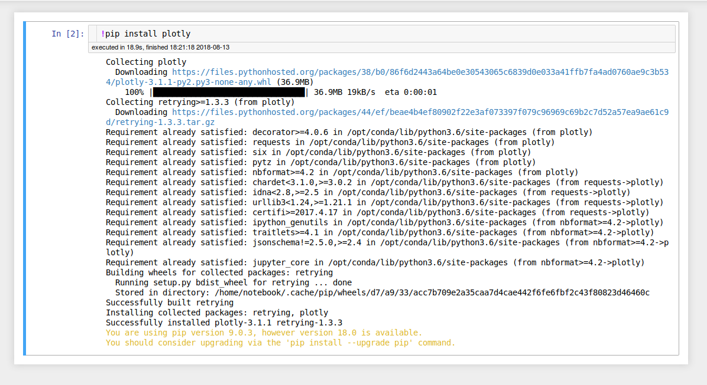
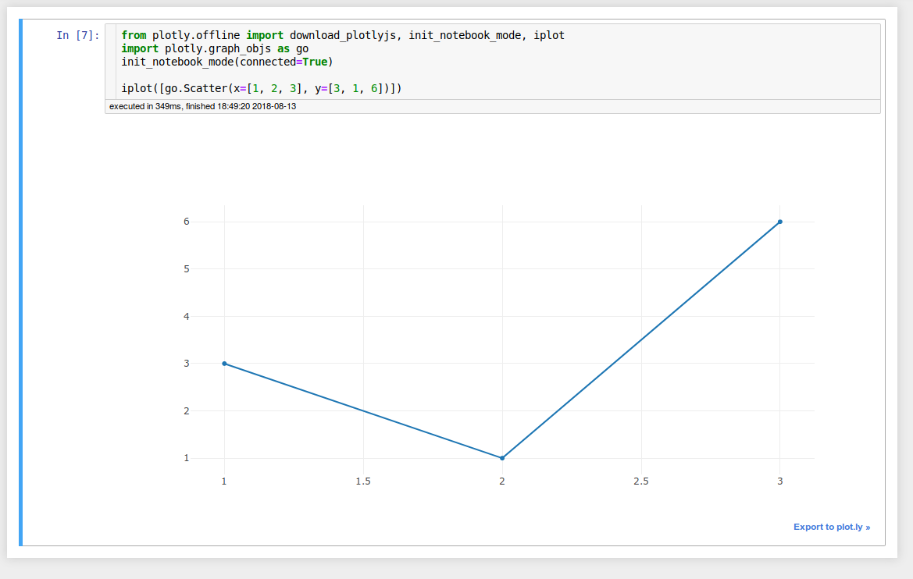
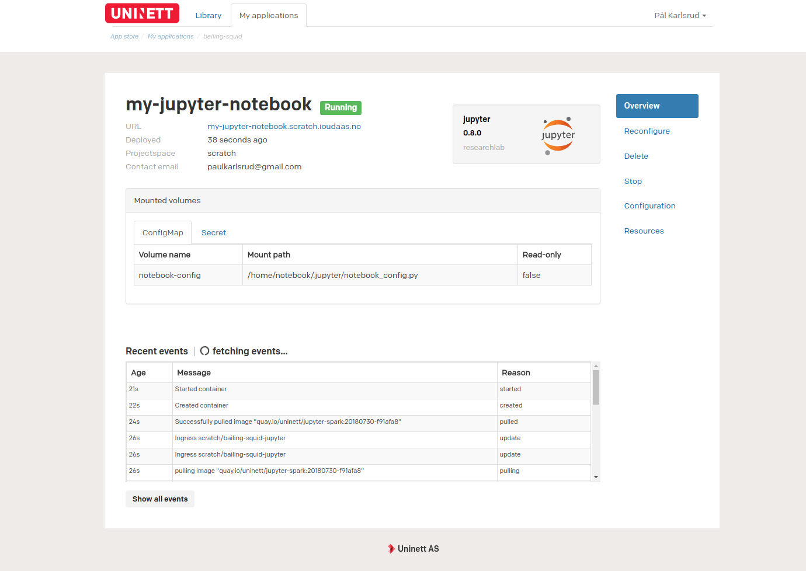

Configuration¶
Enabling JupyterLab¶
JupyterLab is the next-generation of Jupyter notebooks and provides a more
flexible and powerful user-interface. To enable JupyterLab, go to Advanced configuration while installing, and check the jupyterLab checkbox.
Usage¶
The Jupyter package provides a pre-configured development environment based around Jupyter notebooks. Using this notebook, you are able to develop using Python, Scala and R.
Below are some tutorials describing how to use Jupyter notebooks for various different things:
Installing custom packages¶
In some cases the pre-installed libraries are not enough. Jupyter notebooks
allow you to run arbitrary shell commands directly from inside the notebook.
In order to run a command, in this case pip install plotly, prefix the
command with an exclamation mark, like so: !pip install plotly.

You should then be able to use the library as you normally would. 
Note: in most cases the method outlined above will work, but if it doesn’t see the following link for more details: https://jakevdp.github.io/blog/2017/12/05/installing-python-packages-from-jupyter/
Connecting a Jupyter notebook to Apache Spark¶
Prerequisites¶
Knowledge of how to install a package Link to package install tutorial is useful, but not needed.
Creating the Spark cluster¶
First, we need to create an Apache Spark cluster. We will do this by installing
the spark package, but you can also connect to any publicly accessible
Spark cluster.
Fill in the Application name and URL as desired. If you need more than one
worker, or more resources are required for the workers and master, go to the
Advanced configuration section, and change these to your desired values.
[Image of spark install form with values filled in]
When the application is running, copy the Spark master URL in the
Application notes section. This will later be used to specify which cluster
the notebook will attempt to connect to.
[Image of the Spark application with emphasis on the master URL]
Creating the notebook¶
It is now time to install Jupyter. Navigate back to the package library, and
go to the Jupyter installation page. Fill in the Application name and URL
once again.
Connecting to Apache Spark¶
Now go to the Advanced configuration section and paste in
the Spark master URL you obtained in one of the previous steps.
The package is now ready to be installed, so go ahead and press Install.

Click on the link in the URL column in order to access the Jupyter notebook.
In order to test the connection to Spark, you first need to create a
notebook. Then, you can use the following code sample in order to use Spark:
import pyspark
import random
def inside(p):
x, y = random.random(), random.random()
return x*x + y*y < 1
sc = pyspark.SparkContext(appName="Pi")
num_samples = 1000000
count = sc.parallelize(range(0, num_samples)).filter(inside).count()
pi = 4 * count / num_samples
print(pi)
sc.stop()
While running the application, you can visit the Spark cluster dashboard by first navigating to the application overview for the previously created Spark application, and the visiting the URL in the application overview. [Image of the Spark dashboard overview] Here you will be able to see all applications registered with your Spark Cluster, and you are able to access the Spark logs. (This should probably be a tutorial on its own)
How to add new packages¶
In case you are missing some packages from the default application image, you can add those packages yourself by creating a custom docker image. See this tutorial for generic instructions on how to add packages.
After having read the tutorial above, you can use the dockerfile below as a starting point when creating the dockerfile that adds new packages.
# See the value of dockerImage in
#
# https://github.com/Uninett/helm-charts/blob/master/repos/stable/jupyter/values.yaml
#
# to determine the latest base image
FROM quay.io/uninett/jupyter-spark:<insert latest tag here>
# Install system packages
USER root
RUN apt update && apt install -y vim
# Install other packages
USER notebook
RUN pip install scikit-learn